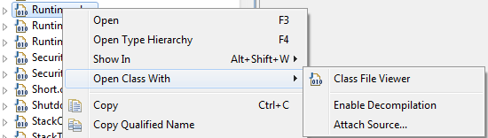
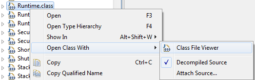
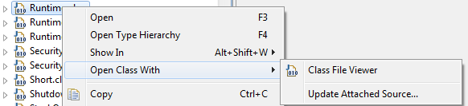

Credits
Update Site
- http://mchr3k-eclipse.appspot.com/
User Guide
Getting decompiled source for all the classes in a jar is as simple as right clicking
on a class within the Package Explorer view and enabling decompilation.
- When there is no source attached and decompilation is disabled:

- When there is no source attached and decompilation is enabled:

- When there is source attached already, if you want to get decompiled source you must first
manually update the attached source to remove the source attachment:

Further details about how this plugin works can be found on my blog.
Features
This project adds the following:
08/08/2012 (1.0.8)
- Remove JD-Eclipse Realign editor - treat enabling decompiled source like attaching source. This fixes
issues with jumping to elements within a file.
01/08/2012 (1.0.7)
- Add a custom editor icon.
27/07/2012 (1.0.6)
- Ensure Eclipse doesn't re-use an existing Class File Viewer.
08/07/2012 (1.0.5)
- Add "Open Class With" dynamic submenu to choose which editor to open class files with.
- Add "Attach Source..." action to "Open Class With" dynamic submenu.
- Fix source caching so that after decompiling a class you can still open the normal "Class Viewer" and see attached source.
05/07/2012 (1.0.4)
- Alignment for fields and enums in addition to method alignment which was implemented by Alex.
- Automated file association setup on first startup. In Eclipse Juno the new "class without source" file type
is defaulted to JD Eclipse and "class" is defaulted back to the built in class viewer so that real
source will be displayed.
- A single Eclipse update site to download JD-Eclipse along with this project:
http://mchr3k-eclipse.appspot.com/